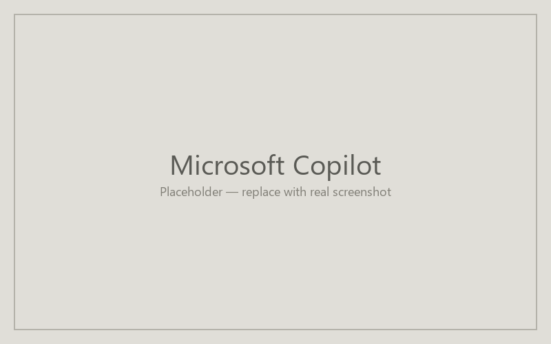

Building agents in Microsoft Copilot
Microsoft Copilot Chat includes a built-in agent-creation flow that any VT faculty member can use with their institutional account. This tutorial covers the consumer-tier flow, not Copilot Studio. Expect a guided form, light-weight grounding, and a shareable link at the end.

Find the agent creation entry point
Sign in to Copilot at copilot.microsoft.com with your VT account. Look for the "Create an agent" or "Agents" entry on the left rail (the exact label has shifted over time; the icon is consistent). If you don't see it, check that you're in the chat experience, not Microsoft 365 Copilot search.
Fill in the creation form
Copilot will walk you through a guided form. Paste the recipe's Title into Name, Description into Description, Instructions into the Instructions / System message field. Knowledge sources go into the file upload section. Skip the Capabilities / Tools section unless your recipe specifies one. Save and preview as you go — Copilot lets you test the agent in a side panel before publishing.
Save and share your agent
Choose Publish, then pick the visibility level. "Just me" is the default; for a faculty-built agent you want to share with students, pick "Shared with people I choose" and add specific accounts or distribution lists. Copy the resulting link and paste it where students can find it (LMS, syllabus, course page).
| Recipe field | Microsoft Copilot field |
|---|---|
| Title | Name |
| Description | Description |
| Instructions | Instructions |
| Knowledge Base | Knowledge / Files |
| Tools | Capabilities |
Last updated: pending.